Using Self-Organizing Maps with SOMbrero for dissimilarity matrices
10 août, 2020
Source:vignettes/e-doc-relationalSOM.Rmd
e-doc-relationalSOM.RmdTo limit this documentation size, most figures are not displayed in the version of the vignette included in the package. To see all figures, you can rerun the vignettes, changing the following option to TRUE:
knitr::opts_chunk$set(include = TRUE)
Alternatively, this compilation is also available at: http://sombrero.nathalievialaneix.eu/articles/e-doc-relationalSOM.html
Basic package description
SOMbrero implements different variants of the Self-Organizing Map algorithm (also called Kohonen’s algorithm). To process a given dataset with the SOM algorithm, you can use the function trainSOM().
This documentation only considers the case of dissimilarity matrices.
Arguments
The trainSOM function has several arguments, but only the first one is required. This argument is x.data which is the dataset used to train the SOM. In this documentation, it is passed to the function as a square matrix or data frame, which entries are dissimilarity measures between pairs of observations. The diagonal of this matrix must contain only zeros.
The other arguments are the same as the arguments passed to the initSOM function (they are parameters defining the algorithm, see help(initSOM) for further details).
Outputs
The trainSOM function returns an object of class somRes (see help(trainSOM) for further details on this class).
Graphics
The following table indicates which graphics are available for a relational SOM.
| What SOM or SC Type |
SOM Energy |
Obs |
Prototypes |
Add |
SuperCluster (no what) |
Obs |
Prototypes |
Add |
|---|---|---|---|---|---|---|---|---|
| (no type) | x | |||||||
| hitmap | x | x | ||||||
| color | x | |||||||
| lines | x | x | x | x | ||||
| meanline | x | x | ||||||
| barplot | x | x | x | x | ||||
| pie | x | x | ||||||
| boxplot | x | x | ||||||
| poly.dist | x | x | ||||||
| umatrix | x | |||||||
| smooth.dist | x | |||||||
| mds | x | x | ||||||
| grid.dist | x | |||||||
| words | x | |||||||
| names | x | x | x | |||||
| graph | x | x | ||||||
| projgraph | x | x | ||||||
| grid | x | |||||||
| dendrogram | x | |||||||
| dendro3d | x |
Case study: the lesmis data set
The lesmis data set is based on the coappearance graph of the characters of the novel Les Miserables (Victor Hugo). Each vertex stands for a character whose name is given by the vertex label. One edge means that the corresponding two characters appear in a common chapter in the book. Each edge also has a value indicating the number of coappearances. The co-appearance network has been extracted by D.E. Knuth (1993).
The lesmis data contain two objects: the first one,lesmis, is an igraph object (see the igraph web page), with 77 nodes and 254 edges.
Further information on this data set is provided with help(lesmis).
data(lesmis) lesmis
## IGRAPH 3babff7 U--- 77 254 --
## + attr: layout (g/n), id (v/n), label (v/c), value (e/n)
## + edges from 3babff7:
## [1] 1-- 2 1-- 3 1-- 4 3-- 4 1-- 5 1-- 6 1-- 7 1-- 8 1-- 9 1--10
## [11] 11--12 4--12 3--12 1--12 12--13 12--14 12--15 12--16 17--18 17--19
## [21] 18--19 17--20 18--20 19--20 17--21 18--21 19--21 20--21 17--22 18--22
## [31] 19--22 20--22 21--22 17--23 18--23 19--23 20--23 21--23 22--23 17--24
## [41] 18--24 19--24 20--24 21--24 22--24 23--24 13--24 12--24 24--25 12--25
## [51] 25--26 24--26 12--26 25--27 12--27 17--27 26--27 12--28 24--28 26--28
## [61] 25--28 27--28 12--29 28--29 24--30 28--30 12--30 24--31 31--32 12--32
## [71] 24--32 28--32 12--33 12--34 28--34 12--35 30--35 12--36 35--36 30--36
## + ... omitted several edgesplot(lesmis, vertex.size = 0)
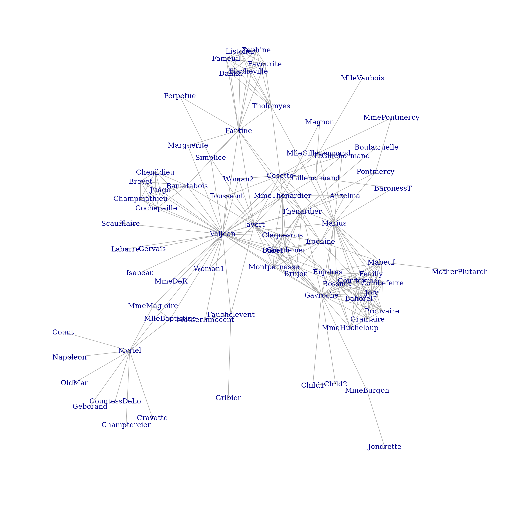
The dissim.lesmis object is a matrix with entries equal to the length of the shortest path between two characters (obtained with the function shortest.paths of package igraph). Note that its row and column names have been initialized with the characters’ names to ease the use of the graphical functions of SOMbrero.
Training the SOM
set.seed(622) mis.som <- trainSOM(x.data=dissim.lesmis, type = "relational", nb.save = 10, init.proto = "random", radius.type = "letremy") plot(mis.som, what="energy")
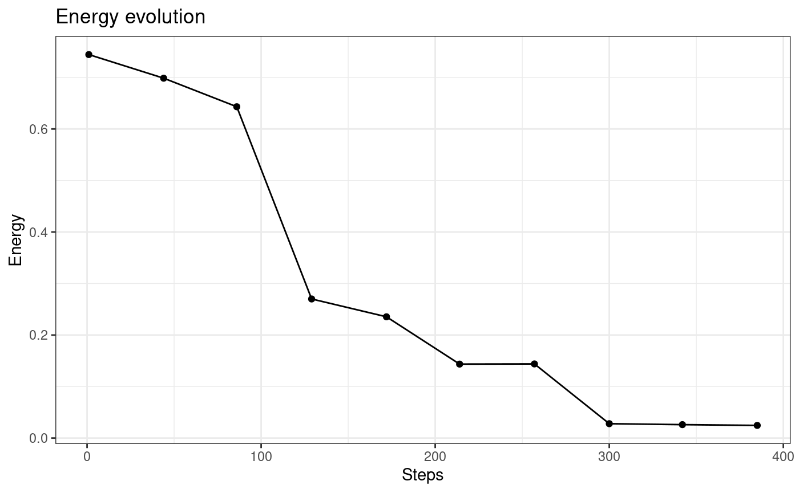
The dissimilarity matrix dissim.lesmis is passed to the trainSOM function as input. As the SOM intermediate backups have been registered (nb.save = 10), the energy evolution can be plotted: it stabilized in the last 100 iterations.
Resulting clustering
The clustering component provides the classification of each of the 77 characters. The table function is a simple way to view data distribution on the map.
mis.som$clustering
## Myriel Napoleon MlleBaptistine MmeMagloire
## 25 25 19 19
## CountessDeLo Geborand Champtercier Cravatte
## 25 25 25 25
## Count OldMan Labarre Valjean
## 25 25 22 22
## Marguerite MmeDeR Isabeau Gervais
## 16 22 23 23
## Tholomyes Listolier Fameuil Blacheville
## 11 11 11 11
## Favourite Dahlia Zephine Fantine
## 11 11 11 11
## MmeThenardier Thenardier Cosette Javert
## 2 6 7 17
## Fauchelevent Bamatabois Perpetue Simplice
## 18 21 11 17
## Scaufflaire Woman1 Judge Champmathieu
## 22 22 21 21
## Brevet Chenildieu Cochepaille Pontmercy
## 21 21 21 9
## Boulatruelle Eponine Anzelma Woman2
## 6 1 2 17
## MotherInnocent Gribier Jondrette MmeBurgon
## 18 18 15 15
## Gavroche Gillenormand Magnon MlleGillenormand
## 15 3 3 13
## MmePontmercy MlleVaubois LtGillenormand Marius
## 8 13 8 4
## BaronessT Mabeuf Enjolras Combeferre
## 3 5 10 5
## Prouvaire Feuilly Courfeyrac Bahorel
## 10 5 5 10
## Bossuet Joly Grantaire MotherPlutarch
## 10 10 10 5
## Gueulemer Babet Claquesous Montparnasse
## 1 1 1 1
## Toussaint Child1 Child2 Brujon
## 17 15 15 1
## MmeHucheloup
## 10table(mis.som$clustering)
##
## 1 2 3 4 5 6 7 8 9 10 11 13 15 16 17 18 19 21 22 23 25
## 6 2 3 1 5 2 1 2 1 7 9 2 5 1 4 3 2 6 5 2 8plot(mis.som)
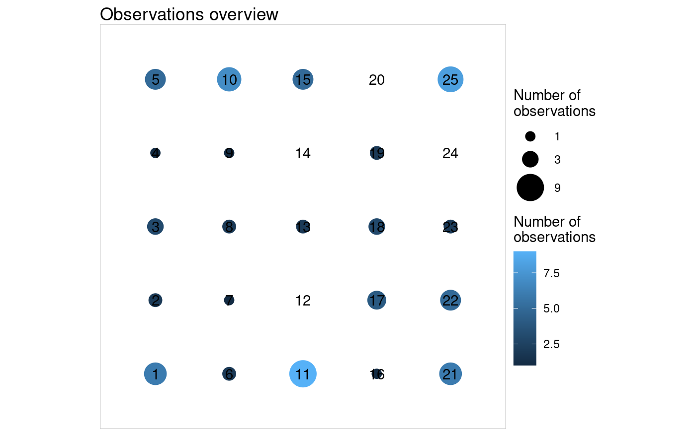
The clustering can be displayed using the plot function with type = names.
plot(mis.som, what = "obs", type = "names")
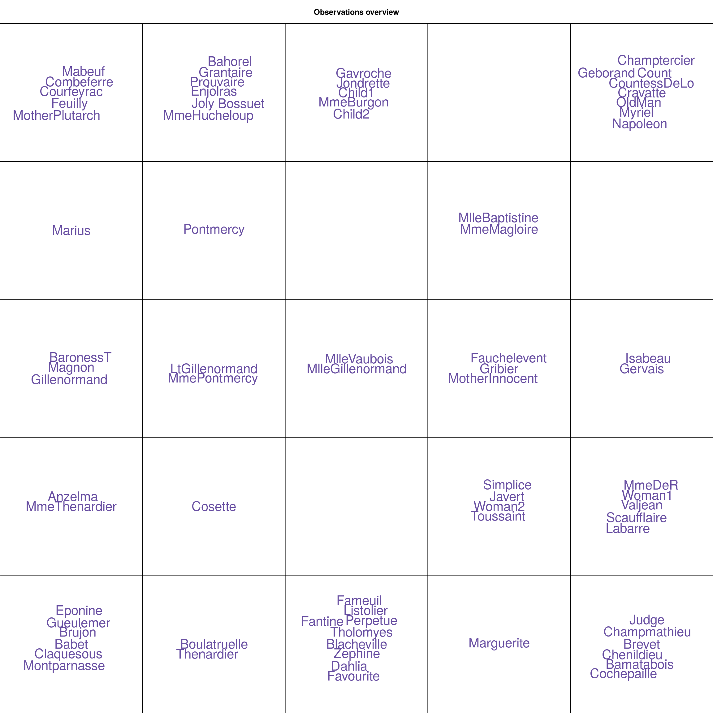
In this clustering, the main character, Valjean, is in a central position (in cluster 8) and some clusters are easily identified as sub-stories around Javert. For instance, clusters 10, 15 and 20 are related to the Thénardier family, with (for instance), cluster 20 being the cluster of Gavroche and his two brothers (named children 1 and 2).
The original graph can also be superimposed on the map:
plot(mis.som, what = "add", type = "graph", var = lesmis)
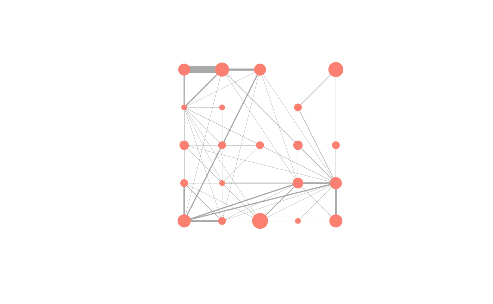
In the latter plot (which is still messy at this stage of the analysis), nodes correspond to clusters and are positionned at the cluster location on the map. The size of the nodes is proportional to the number of characters classified in this cluster and edges between nodes have a width proportional to the total weight between any two characters from the two linked clusters.
Clusters profile overviews can be plotted either with e.g., lines or barplot, that both provide an information similar to that given by "names".
plot(mis.som, what = "prototypes", type = "lines") + guides(color = guide_legend(keyheight = 0.5, ncol = 2, label.theme = element_text(size = 6))) + theme(axis.text.x = element_blank(), axis.ticks.x = element_blank())
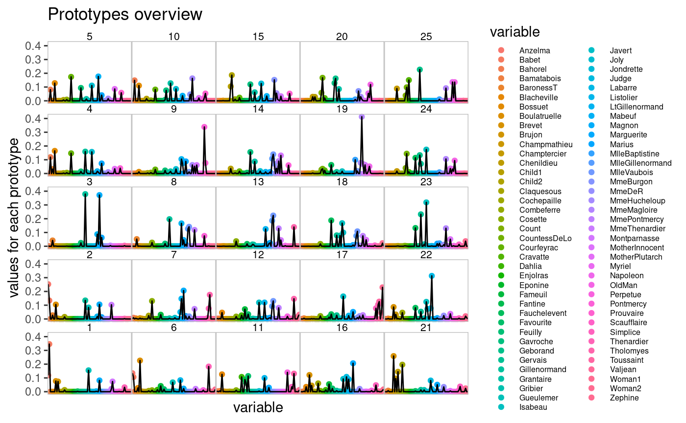
plot(mis.som, what = "prototypes", type = "barplot") + guides(fill = guide_legend(keyheight = 0.5, ncol = 2, label.theme = element_text(size = 6))) + theme(axis.text.x = element_blank(), axis.ticks.x = element_blank())

On these graphics, one variable is represented respectively with a point or a slice. It is therefore easy to see which variable affects which cluster.
To see how different the clusters are, some graphics show the distances between prototypes. These graphics have exactly the same interpretation as for the other data types processed by SOMbrero.
"poly.dist"represents the distances between neighboring prototypes with polygons plotted for each cell of the grid. The smaller the distance between a polygon’s vertex and a cell border, the closer the pair of prototypes. The colors encode the number of observations in the neuron;"umatrix"fills the neurons of the grid using colors that represent the average distance between the current prototype and its neighbors;"smooth.dist"plots the mean distance between the current prototype and its neighbors with a color gradation;"mds"plots the number of the neuron on a map according to a Multi-Dimensional Scaling (MDS) projection;"grid.dist"plots a point for each pair of prototypes, with the \(x\) coordinates representing the distance between the prototypes in the input space, and \(y\) coordinates representing the distance between the corresponding neurons on the grid.
plot(mis.som, what = "prototypes", type = "poly.dist")
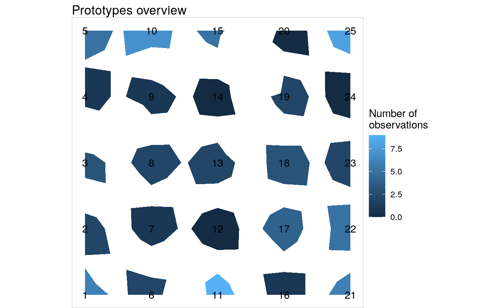
plot(mis.som, what = "prototypes", type = "smooth.dist")
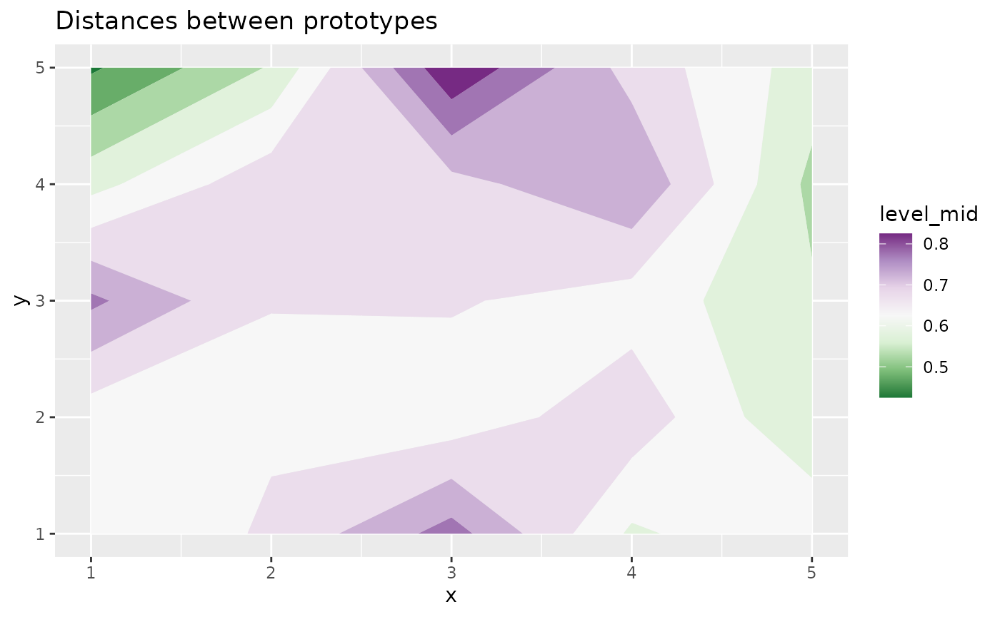
plot(mis.som, what = "prototypes", type = "umatrix")
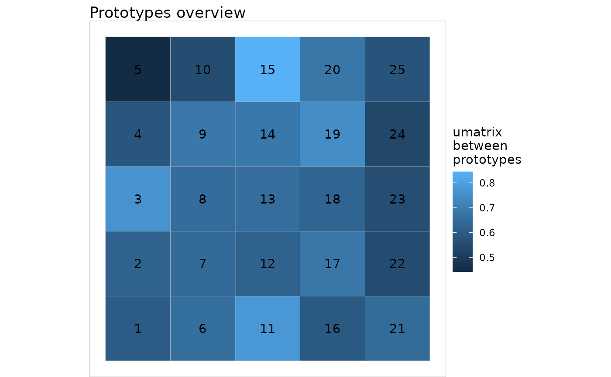
plot(mis.som, what = "prototypes", type = "mds")
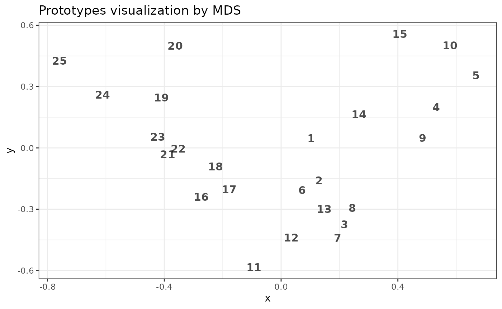
plot(mis.som, what = "prototypes", type = "grid.dist")
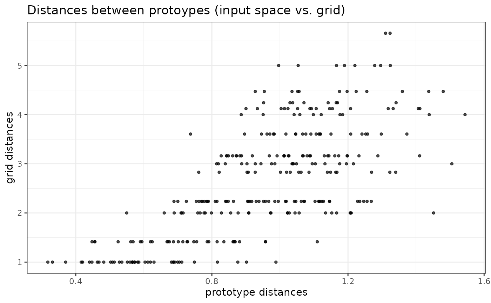
Here we can see that the prototypes located in the top left and top right corners of the map (e.g., clusters 5 and clusters 19-20 and 24-25) are further from the other neurons than in average.
Finally, with a graphical overview of the clustering
plot(lesmis, vertex.label.color = rainbow(25)[mis.som$clustering], vertex.size = 0) legend(x = "left", legend = 1:25, col = rainbow(25), pch = 19)
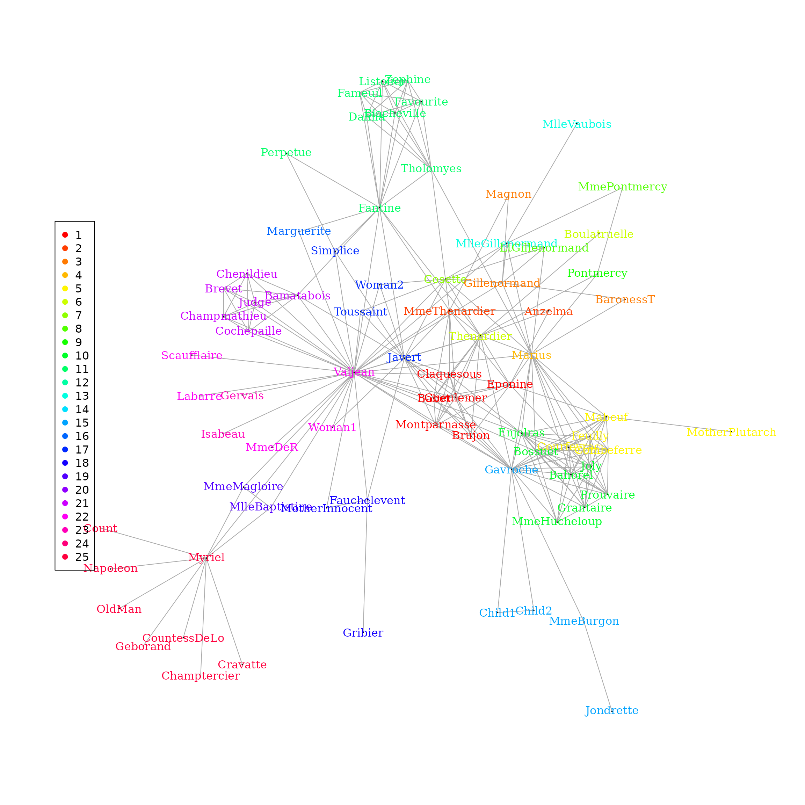
We can see that (for instance) cluster 25 is very relevant to the story: as the characters of this cluster appear only in the sub-story of the Bishop Myriel, he is the only connection for all other characters of cluster 25. The same kind of conclusion holds for cluster 20 (with Gavroche), among others. Most of the other clusters have a small number of observations: it thus seems relevant to compute super clusters.
Compute super clusters
As the number of clusters is rather large with the SOM algorithm, it is possible to perform a hierarchical clustering on top of SOM results. First, let us have an overview of the dendrogram:
plot(superClass(mis.som))
## Warning in plot.somSC(superClass(mis.som)): Impossible to plot the rectangles: no super clusters.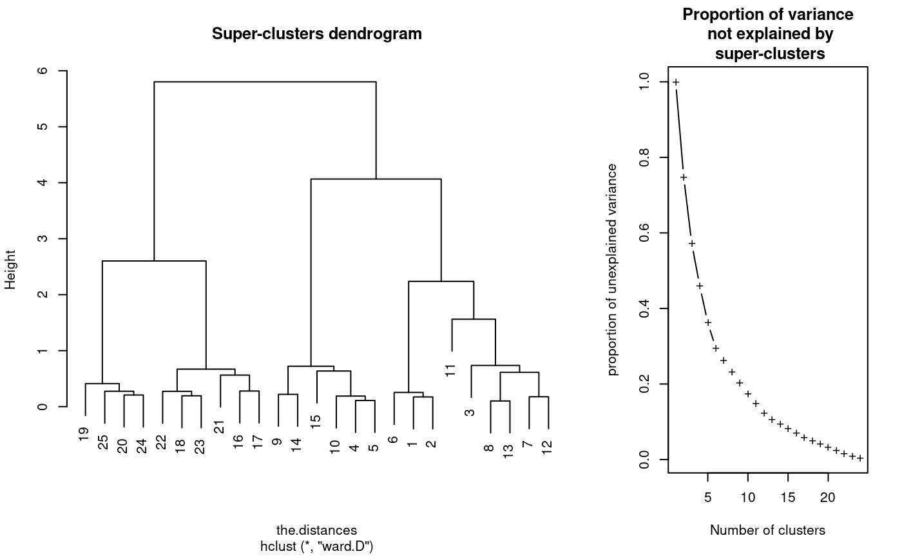
According to the proportion of variance explained by super clusters, 5 groups seem to be a good choice (4 groups would have been relevant also. The clustering with 5 groups creates a group with only one cluster in it).
sc.mis <- superClass(mis.som, k = 5) summary(sc.mis)
##
## SOM Super Classes
## Initial number of clusters : 25
## Number of super clusters : 5
##
##
## Frequency table
## 1 2 3 4 5
## 3 6 6 6 4
##
## Clustering
## 1 2 3 4 5 6 7 8 9 10 11 12 13 14 15 16 17 18 19 20 21 22 23 24 25
## 1 1 2 3 3 1 2 2 3 3 2 2 2 3 3 4 4 4 5 5 4 4 4 5 5
##
##
## ANOVA
## F : 9.13755
## Degrees of freedom : 4
## p-value : 5.00329e-06
## significativity : ***table(sc.mis$cluster)
##
## 1 2 3 4 5
## 3 6 6 6 4plot(sc.mis)
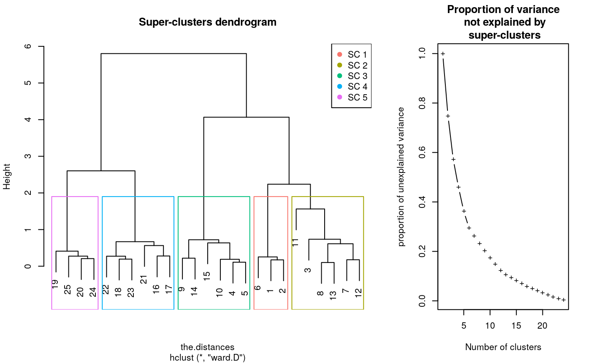
plot(sc.mis, what = "prototypes", type = "grid")
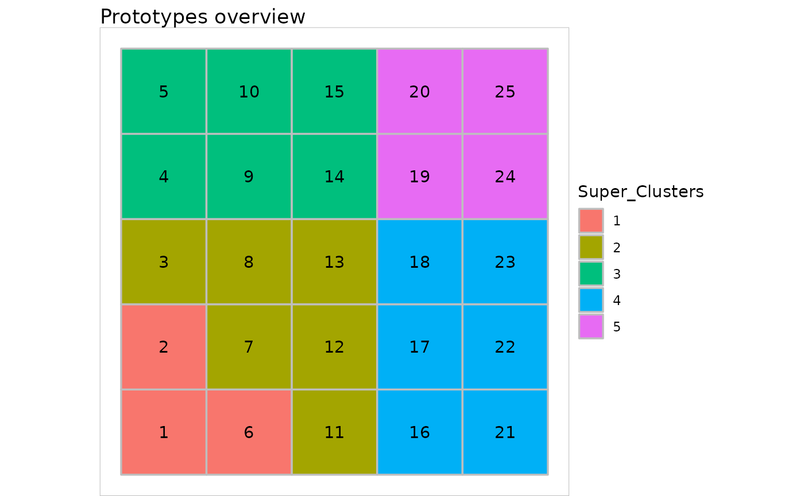
plot(sc.mis, what = "prototypes", type = "lines")
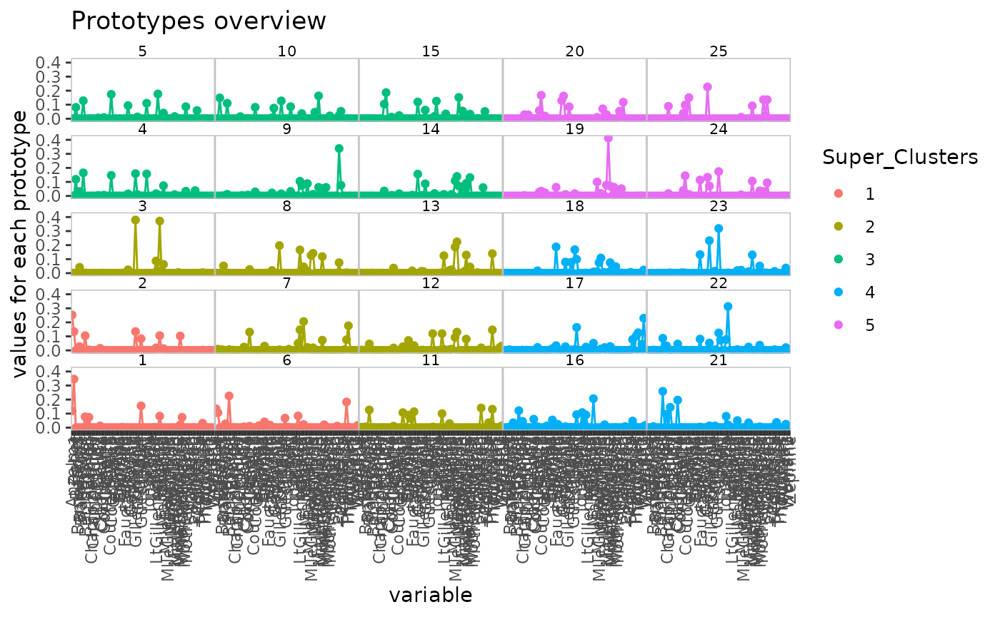
plot(sc.mis, what = "prototypes", type = "mds")
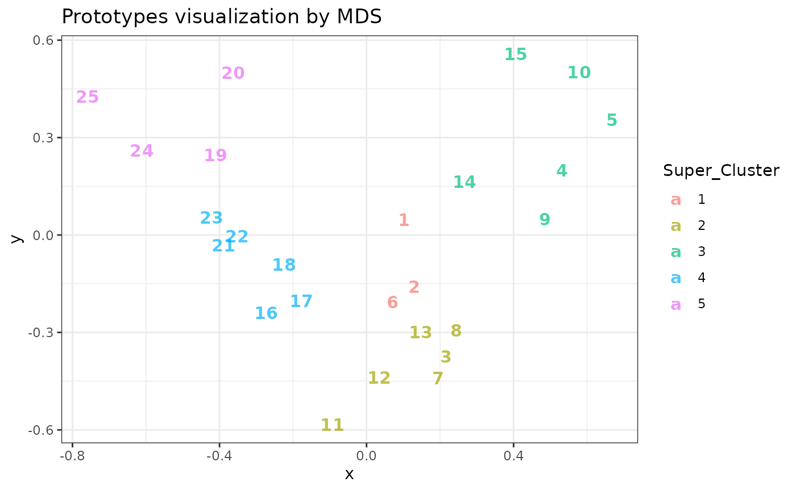
plot(sc.mis, type = "dendro3d")

plot(lesmis, vertex.size = 0, vertex.label.color = rainbow(5)[sc.mis$cluster[mis.som$clustering]]) legend(x = "left", legend = paste("SC", 1:5), col = rainbow(5), pch = 19)
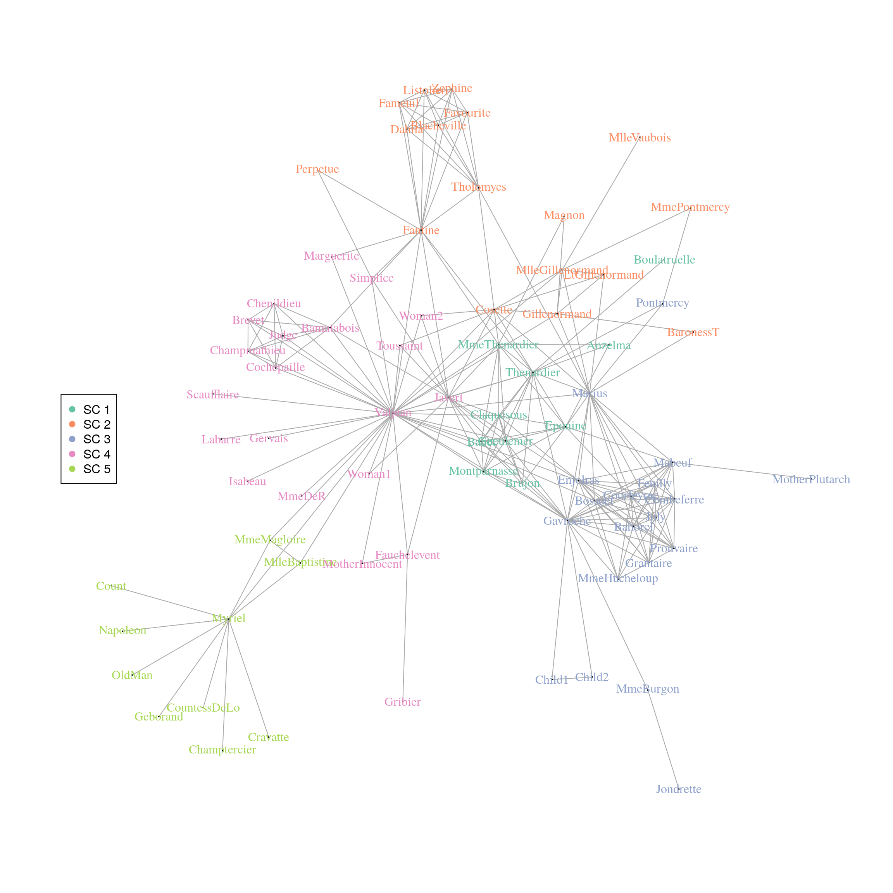
cluster 1 contains
Myrieland the characters involved in his sub-story;cluster 2 constains
Valjeanwhich has a central position in the graph visualization, and most of the important character of the novel (including Javert, Fantine and Cosette);cluster 3 countains people almost only connected to
Fantinewho links them to the rest of the novel;cluster 4 contains
Gavroche, the abandonned child of theThenardier, and the characters of his sub-story (including Mr Thénardier and Gavroche’s two brothers and his sister,Eponine);cluster 5 is a bit harder to interpret, with secondary characters related to
Thenardierand to the main characters of the novel.
SOMbrero also contains functions to compute a projected graph based on the super-clusters and to display it:
projectIGraph(sc.mis, lesmis)
## IGRAPH 8a55d4e UNW- 5 7 --
## + attr: layout (g/n), name (v/c), size (v/n), weight (e/n)
## + edges from 8a55d4e (vertex names):
## [1] 1--2 1--3 1--4 2--3 2--4 3--4 4--5
This representation provides a simplified and interpretable display of the graph where the super clusters are represented by nodes with sizes proportional to the number of characters classified in them. The nodes are positionned at the center of gravity of the map clusters included in each super cluster. They are linked to each other with edges with width proportional to the total number of links between two characters of the correspondind super clusters. Here, the central brown/green node is the one of Valjean and the other main characters (super cluster 2), which appears to be strongly related to super cluster 4 in blue, with Gavroche’s neighbors.
Session information
This vignette has been computed with the following environment:
## R version 4.0.2 (2020-06-22)
## Platform: x86_64-pc-linux-gnu (64-bit)
## Running under: Ubuntu 20.04.1 LTS
##
## Matrix products: default
## BLAS: /usr/lib/x86_64-linux-gnu/blas/libblas.so.3.9.0
## LAPACK: /usr/lib/x86_64-linux-gnu/lapack/liblapack.so.3.9.0
##
## locale:
## [1] LC_CTYPE=en_US.UTF-8 LC_NUMERIC=C
## [3] LC_TIME=fr_FR.UTF-8 LC_COLLATE=en_US.UTF-8
## [5] LC_MONETARY=fr_FR.UTF-8 LC_MESSAGES=en_US.UTF-8
## [7] LC_PAPER=fr_FR.UTF-8 LC_NAME=C
## [9] LC_ADDRESS=C LC_TELEPHONE=C
## [11] LC_MEASUREMENT=fr_FR.UTF-8 LC_IDENTIFICATION=C
##
## attached base packages:
## [1] stats graphics grDevices utils datasets methods base
##
## other attached packages:
## [1] SOMbrero_1.3-1 igraph_1.2.5 ggplot2_3.3.2
##
## loaded via a namespace (and not attached):
## [1] Rcpp_1.0.5 plyr_1.8.6 RColorBrewer_1.1-2
## [4] compiler_4.0.2 pillar_1.4.6 tools_4.0.2
## [7] digest_0.6.25 lattice_0.20-41 lubridate_1.7.9
## [10] checkmate_2.0.0 evaluate_0.14 memoise_1.1.0
## [13] lifecycle_0.2.0 tibble_3.0.3 gtable_0.3.0
## [16] pkgconfig_2.0.3 png_0.1-7 rlang_0.4.7
## [19] rstudioapi_0.11 yaml_2.2.1 pkgdown_1.5.1
## [22] xfun_0.16 interp_1.0-33 metR_0.7.0
## [25] withr_2.2.0 stringr_1.4.0 knitr_1.29
## [28] generics_0.0.2 desc_1.2.0 fs_1.5.0
## [31] vctrs_0.3.2 scatterplot3d_0.3-41 rprojroot_1.3-2
## [34] grid_4.0.2 data.table_1.13.0 glue_1.4.1
## [37] R6_2.4.1 rmarkdown_2.3 sp_1.4-2
## [40] farver_2.0.3 deldir_0.1-28 magrittr_1.5
## [43] backports_1.1.8 scales_1.1.1 htmltools_0.5.0
## [46] ellipsis_0.3.1 MASS_7.3-51.6 ggwordcloud_0.5.0
## [49] assertthat_0.2.1 colorspace_1.4-1 labeling_0.3
## [52] stringi_1.4.6 munsell_0.5.0 crayon_1.3.4